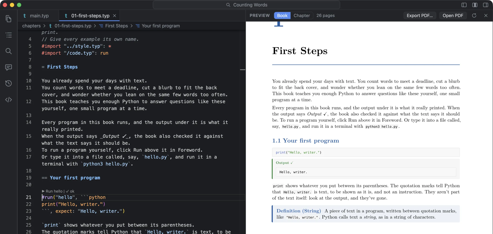
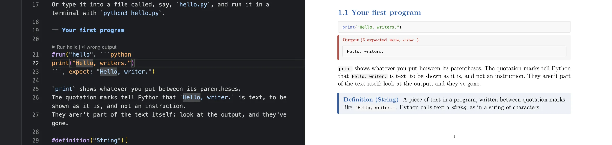

In the book
#import "/code.typ": run
#run("hello", ```python
print("Hello, writer.")
```, expect: "Hello, writer.")The book shows the code, then a panel with what it printed. With expect:, the panel says Output ✓ when they match. When they don’t, it’s red: Output (✗ expected “Hello, writer.”). Change the code and the panel turns amber, out of date, as you type, before anything runs. A failed run shows its exit code and what it printed to stderr.

Running them
Above each example in the editor is a lens: ▶ Run hello, with its state: ✓ ok, ⚠ out of date, ✗ failed, ✗ wrong output. The Code examples view lists them all by chapter, with Run all, or Run 3 not up to date. Python, JavaScript, R, Julia, Ruby, Lua, Perl and shell are supported, with whatever interpreter you have installed.
Each example runs as its own process, in the book’s folder, so open("texts/opening.txt") finds the book’s files. Input is closed, it’s stopped after 30 seconds (and everything it started with it), and output is capped at 256 KB. Nothing runs while you type. Examples run when you click, before you export (if any are out of date, Export PDF asks), and after the assistant changes one.
The first time, Foreword asks: “Run the code examples in Counting Words? They run on your Mac with your permissions, so they can read and change your files. Only run code you trust.” Until you allow it, nothing runs.
Where the output lives
In code-output/outputs.json, in the book’s folder, saved with the code that produced it. That makes it part of the book: typst compile and make work without Foreword, and print the same output. It’s also how “out of date” works without running anything: code.typ, the small Typst file that defines #run, compares each example’s code with the code that was stored with its output. If they differ, the panel turns amber, even in a plain typst compile.
With the assistant
The assistant writes and edits examples, but it never runs them and never touches outputs.json. After its turn, Foreword re-runs any example it changed and says how that went: “Ran 3 changed code examples: all fine.” Or, when one fails, “1 code example failed: fib: expected "55", got "54" (chapters/02-functions.typ:41)”, with Ask the assistant to fix them. In a test, a bug planted in a Fibonacci function came back exactly like that, the button had it fixed, and the re-run was clean.
Why
In a technical book, the output printed under an example is a claim, and it goes stale the first time you change the code and forget to paste the new output in. Readers find these. Here the output can’t drift from the code without the book showing it.
The sample Counting Words is a short book about measuring prose with Python. It has 33 examples, 30 of them checked, analysing the opening of Pride and Prejudice.
What it doesn’t do
- No sandbox: examples run with your permissions, which is why it asks first.
- Examples don’t share state; each is a fresh process. No input, no plots or images.
- The check is an exact match on what was printed, after trimming spaces.